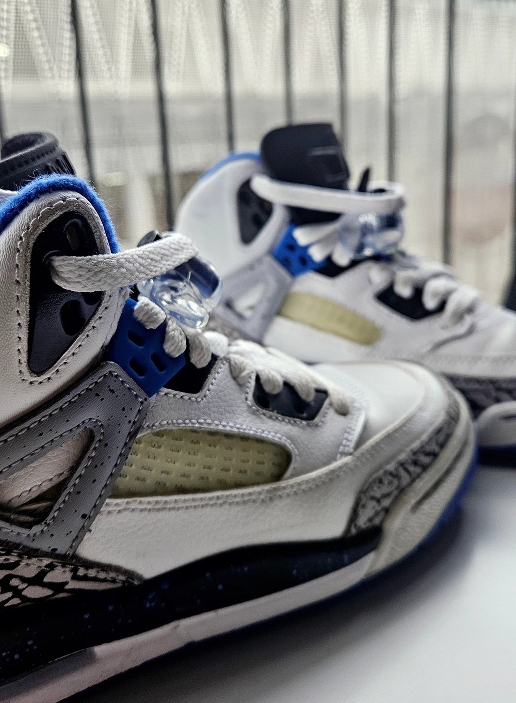
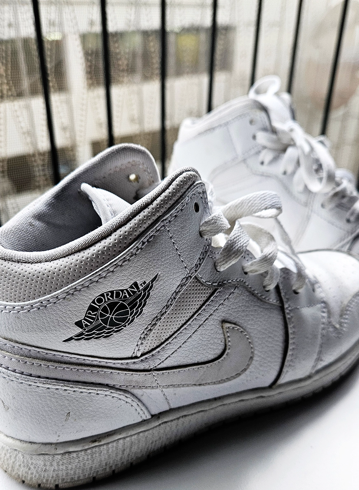

Bildoptimering
På denna sida presenteras fem stycken bilder i WebP-format som har optimerats genom ett pluin som heter Vite image optimizer. Presenterade bilder har gått igenom en process där det optimerats genom vektyget med kompressionsnivån 65.
Bilder nedan presenteras med bildstorlek i orginalform och efter resultat med optimering.Headerbilden över fick detta resultat efter optimering:
Före: 698 kb
Efter: 173 kb

Före: 557 kb
Efter: 105 kb

Före: 526 kb
Efter: 78 kb
Före: 608 kb
Efter: 123 kb

Före: 689 kb
Efter: 173 kb